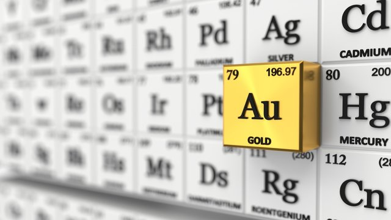
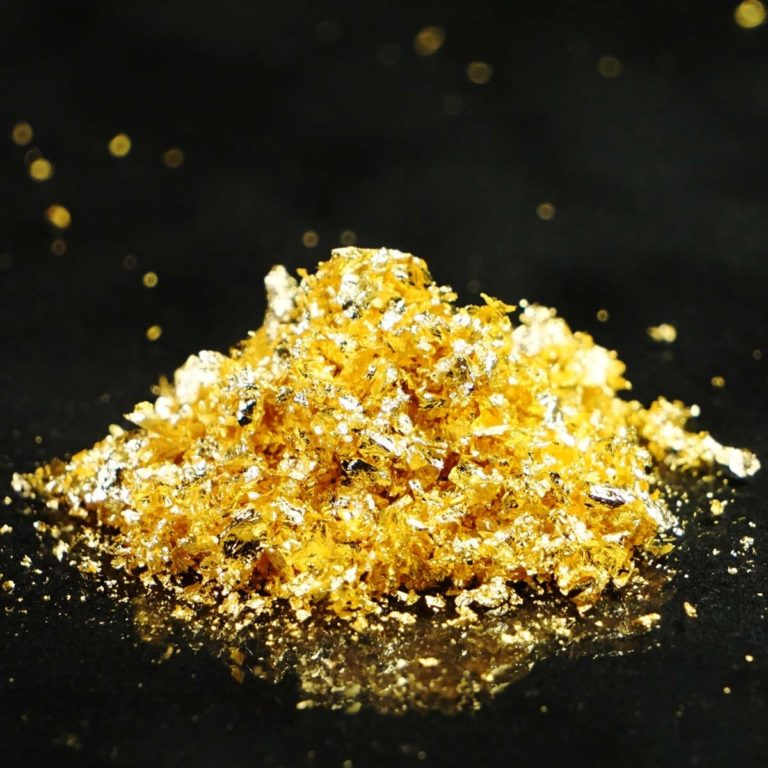
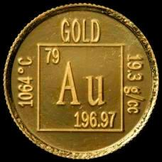

Золото
Зо́лото (химический символ — Au, от лат. Aurum) — элемент 11 группы (по устаревшей классификации — побочной подгруппы первой группы) шестого периода периодической системы химических элементов с атомным номером 79.Простое вещество золото — благородный металл жёлтого цвета.

Зарядовое число 79 золота делает его одним из высших по количеству протонов элементов, которые встречаются в природе. Ранее предполагалось, что золото образовывалось при нуклеосинтезе сверхновых звёзд, однако по новой теории предполагается, что золото и другие элементы тяжелее железа образовались в результате разрушения нейтронных звёзд. Спутниковые спектрометры в состоянии обнаружить образующееся золото лишь косвенно, «у нас нет прямых спектроскопических доказательств, что такие элементы действительно образуются». По этой теории, в результате взрыва нейтронной звезды содержащая металлы пыль (в том числе тяжёлые металлы, например, золото) выбрасывается в космическое пространство, в котором оно впоследствии конденсируется, так произошло в Солнечной системе и на Земле. Поскольку сразу после своего возникновения Земля была в расплавленном состоянии, почти всё золото в настоящее время на Земле находится в ядре. Большинство золота, которое сегодня присутствует в земной коре и мантии, было доставлено на Землю астероидами во время поздней тяжёлой бомбардировки.

Люди добывают золото с незапамятных времён. С золотом человечество столкнулось уже в 5-м тысячелетии до н. э. в эпоху неолита благодаря его распространению в самородном состоянии.По предположению археологов, начало системной добыче было положено на Ближнем Востоке, откуда золотые украшения поставлялись, в частности, в Египет. Именно в Египте в гробнице королевы Зер и одной из королев Пу-аби Ур в шумерской цивилизации были найдены первые золотые украшения, датируемые 3-м тысячелетием до н. э.В России до елизаветинских времён золото не добывалось. Оно ввозилось из-за границы в обмен на товары и взималось в виде ввозных пошлин. Первое открытие запасов золота было сделано в Архангельской губернии, где вблизи деревни Надвоицы была обнаружена золотая жила. Её начали разрабатывать в 1745 году. Рудник с перерывами действовал до 1794 года и дал всего около 65 кг золота. Началом золотодобычи в России считают 21 мая (1 июня) 1745 года, когда Ерофей Марков, нашедший золото на Урале, объявил о своём открытии в Канцелярии Главного правления заводов в Екатеринбурге.За всю историю человечеством добыто около 161 тысячи тонн золота, рыночная стоимость которого 8—9 триллионов долларов (оценка на 2011 год)

Золото и его сплавы используют для декоративных целей, изготовления ювелирных изделий, часов, монет, медалей, зубных протезов (содержание золота в таких сплавах характеризуется пробой; см. в статье Ювелирные сплавы), в технике – для изготовления деталей химической аппаратуры, электрических контактов и проводов, изделий микроэлектроники, окрашивания стёкол, нанесения покрытий на металлическую поверхность (в самолётостроении, космической технике и др.), в производстве припоев, катализаторов и др.; см. также Золочение. Радиоактивный изотоп 198Au (период полураспада T½ 2,694 суток) используют для лечения опухолей в лучевой терапии. Золото – валютный металл (всеобщий эквивалент денег).